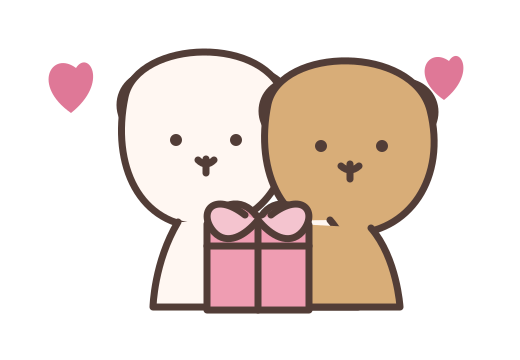
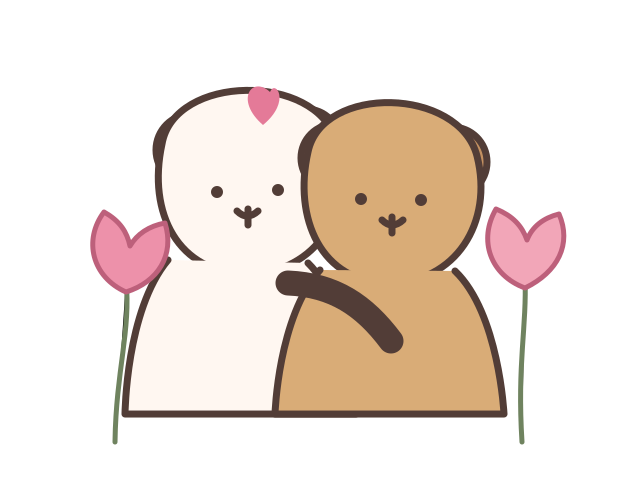
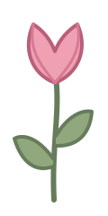
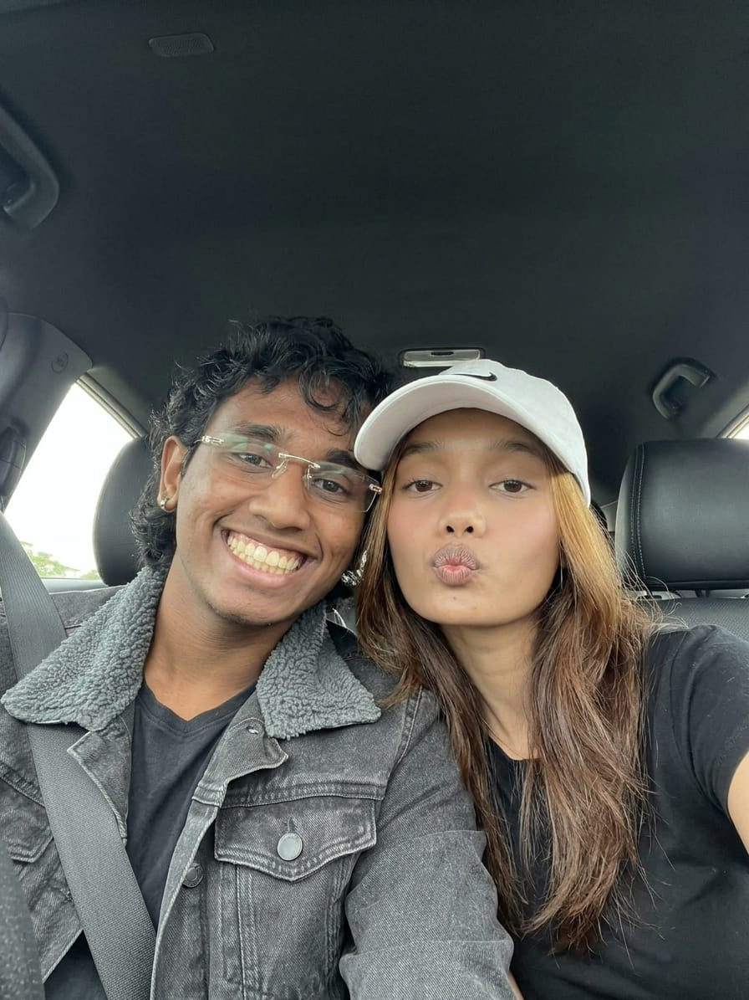
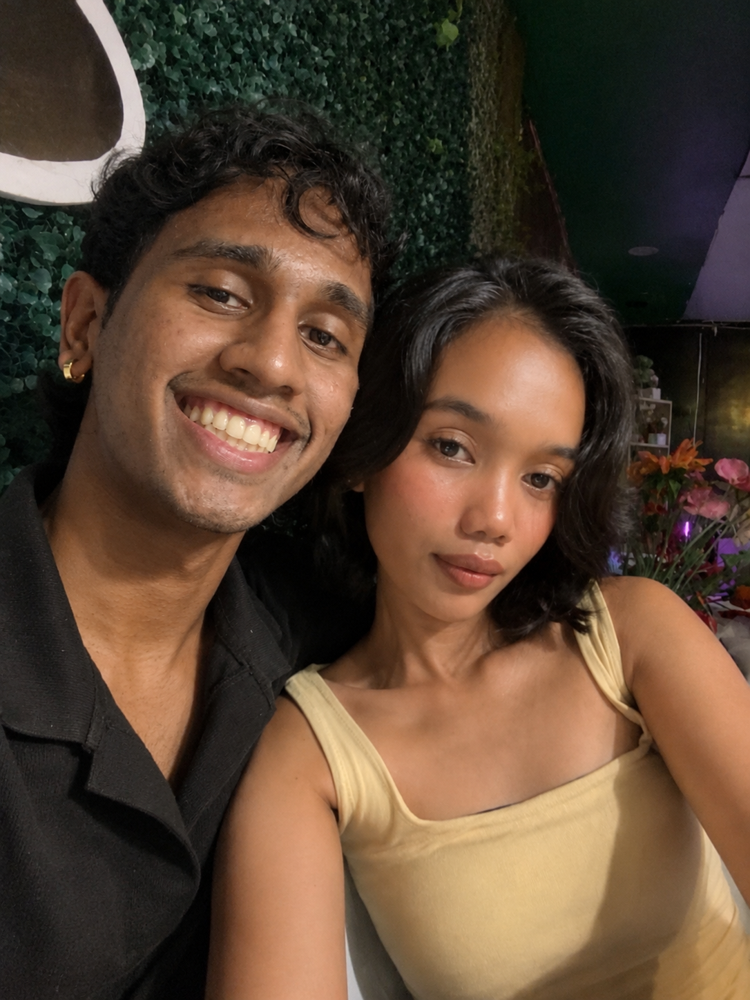
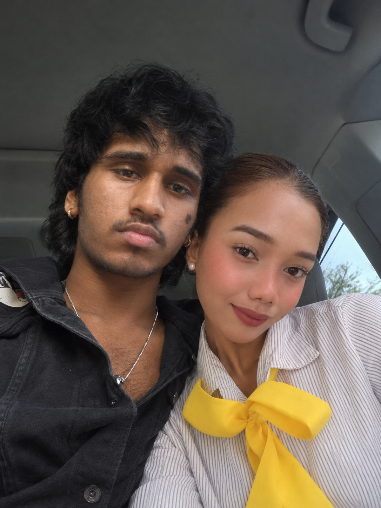
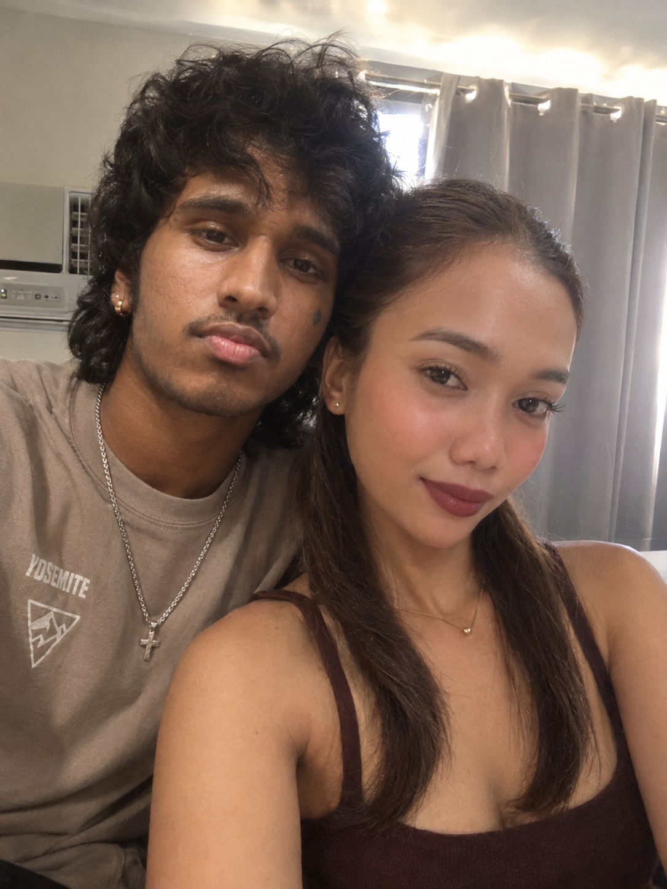
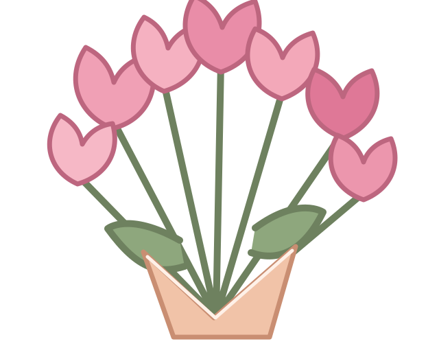
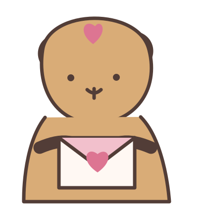
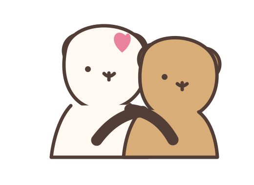

Your laugh
the kind that makes everything else disappear for a second.
A tiny question from Austin

I made a little something just for you.
one month down • a whole story ahead
A love note in five little chapters
One month of us, and somehow my ordinary days already feel a little more golden.
begin↓

01 / OUR LITTLE BEGINNING
In just one month, you have given me so many moments I want to keep—the laughs, the softness, the late conversations, and the comfort of simply knowing you are there.
02 / FIVE FAVORITE FRAMES
Replace the five files in assets/photos with your own 01.jpg through 05.jpg. The cards are already waiting for your memories.





03 / IN THE LITTLE THINGS
Not a long time by the calendar. More than enough time to know I am grateful we found each other.
the kind that makes everything else disappear for a second.
soft, thoughtful, and so easy to feel safe around.
how even the quiet moments feel special with you.
all the tiny adventures still waiting for us.
04 / A GARDEN FOR SHERRY
Tap the garden and leave a little love behind.

7 wishes blooming

For Sherry, from Austin
Sherry,
One month may sound small, but what we have already means so much to me. Thank you for every laugh, every check-in, every gentle moment, and every memory we are beginning to collect.
I made this for you because flowers fade, and I wanted to give you a little garden you could return to—a reminder that choosing you has been the easiest, sweetest choice.
Here is to our first month, and to every chapter still waiting for us.
Always yours, Austin
one month down • forever to explore

correct answer!
I love doing life with you.
Back to the beginning ↑